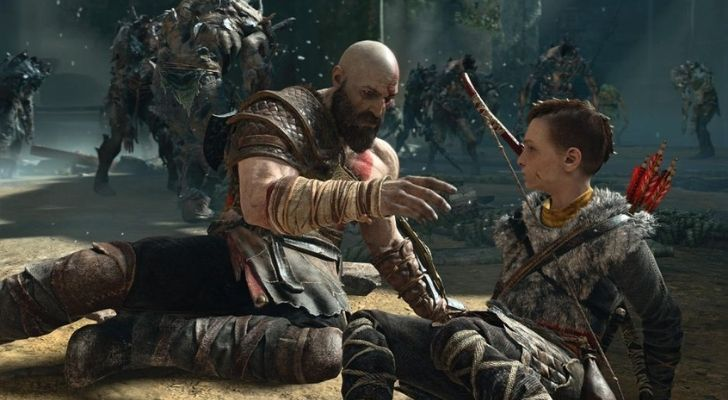

Do you often find yourself reflecting on all the different games you’ve played over the years? If you try and think off the top of your head about the best video games, only a few will come to mind. If you stop and remember all the great games you feel nostalgic about – old or new – you’ll find there’s a lot more than you first thought! We’ve made the monumental effort of reducing that almighty list down to a short, sweet 100, and we’re here to tell you all about them! So stay awhile, and check out these 100 facts about your best gaming moments!
1. A custom-made demo of SimCity 2000 is exhibited in the New York Museum of Modern Art.
The Museum of Modern Art added SimCity 2000 to its halls in 2012, one of twelve games considered to be perfect heralds of applied design. Many of the games exhibited are playable to some degree. There’s a demo of SimCity 2000, which was explicitly designed for the exhibition due to the sheer size of the game.
2. The dragon Paarthurnax in The Elder Scrolls V: Skyrim is voiced by the same man who voices Nintendo’s Mario.
That’s right, both the leader of the Greybeards with the deep husky voice and Nintendo’s most iconic character with his high-pitched Italian accent is voiced by Charles Martinet. Some other notable people behind some of Skyrim’s voices include Lynda Carter (Miss World USA 1972), Christopher Plummer (Charles F. Muntz from Pixar’s UP), and Michael Hogan (Colonel Saul Tigh from Battlestar Galactica)
3. Gears of War 2 was featured in AMC’s The Walking Dead.

During a flashback in the final episode of season ten of The Walking Dead, the season’s antagonist, Negan, can be seen playing Gears of War 2. While Negan is supposedly playing multiplayer with a couple of other players, keen-eyed viewers figured out that the gameplay footage was from a point in the game’s campaign, specifically Act 2.
4. The creators of PUBG tried to sue the makers of Fortnite.
If you haven’t played either of the battle royale giants, you’d be forgiven for thinking that they’re pretty much the same game. Bluehole, the company behind PlayerUnknown’s Battlegrounds (PUBG), obviously thought the same as they attempted to sue Epic Games because Fortnite allegedly copied their battle royale game-style. The case was eventually dropped, which leaves us wondering whether they realized that the idea had been around for a while in other media formats – like the Japanese Battle Royale film released in 2000.
5. There are multiple references in Batman: Arkham City to ABC’s hit TV series Lost.
First up, did you know that the Joker in Batman: Arkham City is voiced by none other than Mark Hamill, of Star Wars fame? It turns out that Hamill was a massive fan of Lost, so he managed to sneak in a reference to his favorite show during one of the Joker’s monologues. On top of this, if you wander around in the game long enough, you can hear some background crooks wondering out loud about whether the island in Lost was ever actually explained.
6. The studio behind Thief II: The Metal Age ran out of money, so they donated their tools to the game’s fans to expand upon the game.

Despite their games being instant cult classics, Looking Glass Studios were hit by financial setback after setback and were forced to close down in 2000. It’s thanks to the developer’s generosity that the unofficial yet incredibly well-made expansion pack Thief 2X: Shadows of the Metal Age was able to come to life. The game featured a range of new missions, cut-scenes, more than 3,000 lines of dialogue, and an entirely new playable character! It took five years of hard work from more than 60 people to make the expansion a reality.
7. Divinity: Original Sin 2 wasn’t meant to be released with voiced dialogue.
One of the best things about DOS2, if it’s even possible to narrow it down to a few things, is the witty yet refreshingly different dialogue you hear throughout the game. Sometimes it adds some insight into what you’re doing. Sometimes it’s your character being a sarcastic ass; either way – it really hooks you into the game! Amazingly, it was only after the initial launch date was pushed back that DOS2’s developers made the call to introduce dialogue, going over millions of lines of scripts before finally releasing the game in 2017.
8. In 2012 the developers of Terraria tried to cancel further updates to the game.
Lead developer Andrew “Redigit” Spinks announced in February 2012 that there would be no further updates to Terraria. He felt that it was time to move on from the game and wished to spend more time with his family. Fans didn’t take this news lightly, but they didn’t have to wait long for some good news. In September 2012, Terraria was ported to Xbox 360 and PS3. The renewed interest in the game led to many more updates to the PC version – we just hope that Spinks ended up getting some time with his family before returning to Terraria!
9. Counter-Strike was initially a custom mod you could play in Half-Life.
In 1999, Minh Le and Jess Cliffe created the first version of Counter-Strike, in a custom map in Half-Life. By 2000, the pair had gone through five beta releases and created a website, which drew enough attention from Half-Life’s developers to buy them out and hire them to create a full version of Counter-Strike. Counter-Strike became one of the most influential first-person shooter games, developing many of the FPS game mechanics found in nearly all modern shooters!
.10 Left 4 Dead 2 was so popular that an expansion was released 11 years after the original launch date.

As far as zombie survival games go, Left 4 Dead 2 found a formula for exciting yet refreshing gameplay that’s incredibly hard to beat. Combine that with surprisingly good graphics for its time, and this is why ten years from launch, it still had enough of a dedicated following to warrant an expansion. Valve, the producers of the game, were initially planning to create a next-gen sequel but instead decided to make The Last Stand Expansion to what is commonly referred to as “the game that refuses to die.”
11. Rockstar Games hired real-life gang members to voice background characters in Grand Theft Auto V.

In an attempt to add as much authenticity as possible to a game set in a fictional criminal underworld, the producers decided to shy away from “goofy LA actors,” who added little more than two dimensions to the characters they voiced. Quite a lot of the background characters are gangsters belonging to Latino and Black gangs, so Rockstar Games got a guy to go around and hire genuine gangsters to voice the part. Many who saw their scripts threw them on the floor, as they weren’t “real” enough, and they recorded their own version instead!
12. Half-Life was listed as the Best-Selling First-Person Shooter of All Time (PC) in the 2008 gamer’s edition of the Guinness Book of World Records.

Not only did Half-Life completely redefine the PC first-person shooter genre, but it also had an incredibly mind-bending sci-fi story to back it up! It’s no wonder that by 2008 it ended up selling more than 9.3 million copies at retail alone, being described by IGN at the time as the best shooter since the first Doom game. Many game critics and reviewers gave it a full ten out of ten, with PC Gamer awarding it the title of Best PC Game Ever in 1999, 2001, and 2005.
13. The initial designs for the Little Sisters in BioShock were absolutely horrifying.

Originally referred to by the game studio as “gatherers,” the purpose of Little Sisters was to harvest a rare chemical called ADAM from the corpses you see strewn around the place. Some of the first concepts for BioShock‘s gatherers were equally horrifying. For example, there was, what appeared to be, a Doberman in a wheelchair and a frog that had some sort of funnel sticking out of its butt. Fortunately, the game studio decided to go with downright creepy-looking little girls to make the player sympathize with them.
14. The background noises in Silent Hill 2 were randomized to keep players on the edge of their seats.

In many games having a keen ear and picking out sounds can mean the difference between life and death. The developers of Silent Hill 2 found that by randomizing the order and timing that sounds like footsteps, breathing, the shattering of glass, and even pig squeals, players were kept on edge and were unable to predict what might come next. From a development point of view, this method was an absolute genius move, but I still don’t think I’ll ever be able to forgive them!
15. God of War (2018) plays out like a movie that’s been shot in one single take, with no cuts or loading screens.
In the movie industry, it’s pretty much impossible to film anything without taking multiple cuts, which has influenced how we put together stories – not just in movies but also in the vast majority of video games. The creators of God of War (2018) wanted to try something different to pull the players focus more on Kratos himself and everything he was experiencing. By doing this, they were able to immerse players into the game at an entirely new level!